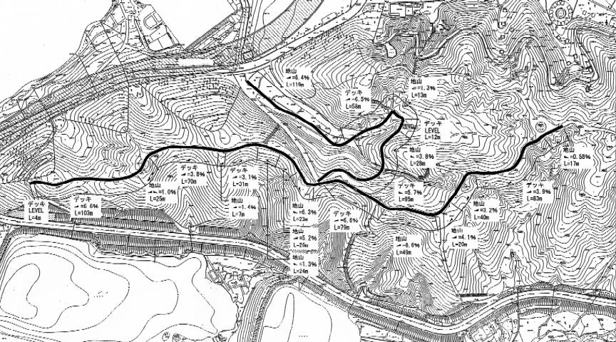

For EXPO 2005 AICHI JAPAN, the Japan Association for the 2005 World Exposition is planning an experiential/participatory environmental education program. For this program, they are creating a virtual forest and walk-throughs will be supported with portable terminals. There will be trees or plants, including valuable species, around a roughly 1 km course, as shown in Fig. 1. Our role is to provide an environmental education support system that uses GPS and PDAs.
Each GPS receiver gets the participantÅfs current position every one second, and sends the information to the PDA. To provide knowledge about plants and trees, the PDA displays the interpretation, photos, and quiz according to the objects present at the special location. We are now constructing a concept for educating and developing a support system with Japan Environmental Education Forum that Japan Association relegates this program.

Å@
Fig. 1. A course in Forest Experience Zone
Contact:
Tetsuro Sakai, Graduated School of Informatics, Kyoto University,
sakai at i.kyoto-u.ac.jp
Satoshi Koizumi, Digital City Research Center, Japan Science and Technology Agency,
satoshi at digitalcity.jst.go.jp